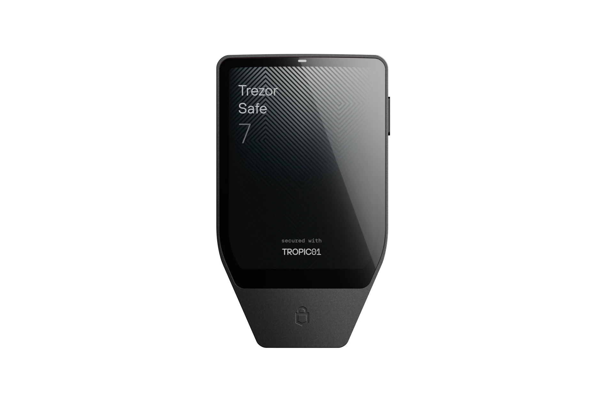

My actual recommendations
Cold storage pick
Trezor

Trezor is what I like for longer-term storage. If it’s Bitcoin I’m not actively moving, trading, or spending, this is the wallet I want holding the more serious balance.
- Good fit for long-term self custody
- Dedicated hardware signing device
- Better for coins you are not actively using
- Ideal for a proper cold storage setup
Simplest pick
Tangem

Tangem is the easy one. It’s simple, fast, and feels familiar. I like it for smaller balances and mobile access.
- Very easy onboarding
- Great for mobile access
- No cables or tiny buttons
- Self custody without making it a project
Use code PROOFOFMIKE on Tangem for a discount
⚡ Check Tangem